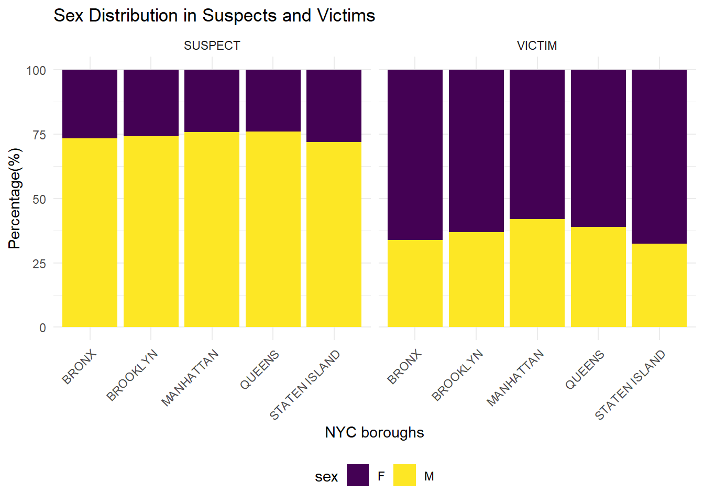
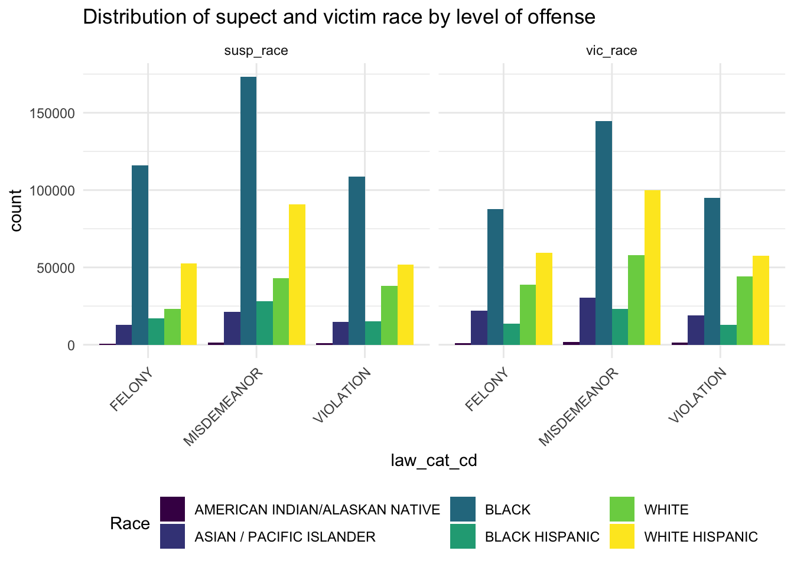
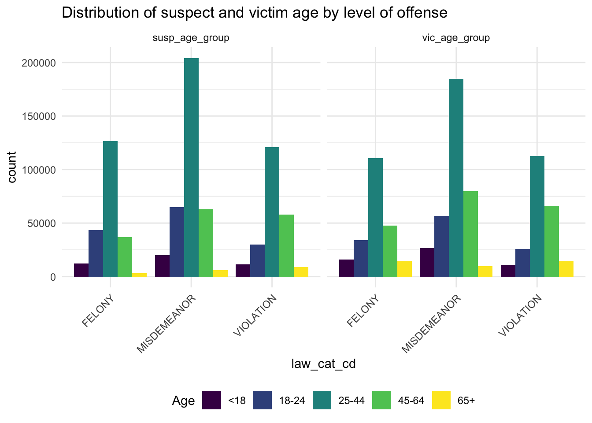
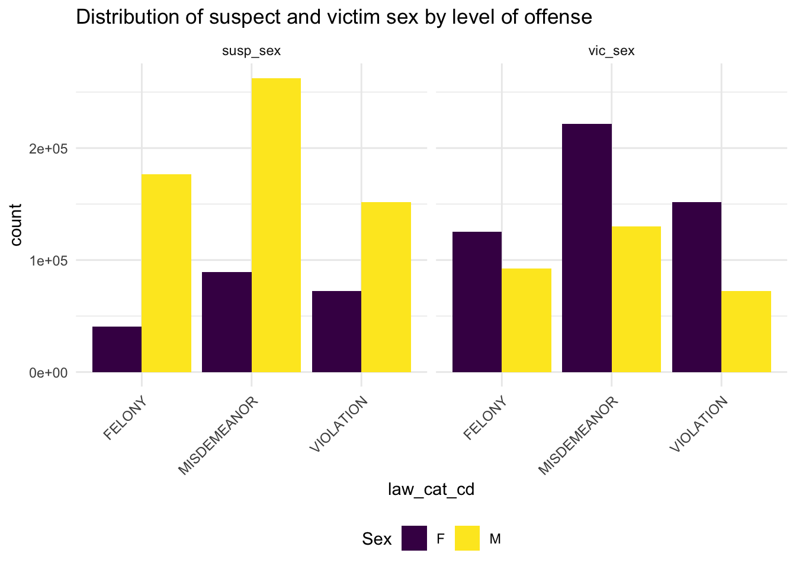

Suspect and Victim Analysis
Demographic Distribution
We would like to learn more about the demographic information breakdown in suspects and victims. The analysis is done through three aspects: race, age, and sex. We divided the exploration into different boroughs as it is a representative way of looking at NYC.
Race Distribution across Boroughs
susp_race=demo|>
select(boro_nm,susp_race)|>
group_by(boro_nm,susp_race)|>
summarise(count=n())|>
group_by(boro_nm)|>
mutate(total=sum(count),
percent=(count/total)*100)|>
select(-count,-total)
colnames(susp_race)=c("boro_nm","race","percent_susp")
vic_race=demo|>
select(boro_nm,vic_race)|>
group_by(boro_nm,vic_race)|>
summarise(count=n())|>
group_by(boro_nm)|>
mutate(total=sum(count),
percent=(count/total)*100)|>
select(-count,-total)
colnames(vic_race)=c("boro_nm","race","percent_vic")
combined_race=vic_race|>
full_join(susp_race,by=c("boro_nm","race"))|>
pivot_longer(
cols=starts_with("percent"),
names_to="category",
values_to="percent"
)|>
mutate(
category=ifelse(category=="percent_susp","SUSPECT","VICTIM")
)
combined_race|>
ggplot(aes(x=boro_nm,y=percent,fill=race))+
geom_bar(stat="identity")+
facet_grid(~category)+
labs(
title="Race Distribution in Suspects and Victims",
x="NYC boroughs",
y="Percentage(%)"
)+
theme_minimal()+
scale_fill_viridis_d()+
#scale_fill_brewer(palette = "Spectral")+
theme(axis.text.x=element_text(angle=45,hjust=1),legend.position="bottom")
This figure shows the percentage of different race for all NYC boroughs. Black, white, and white hispanic are the top three percent in both suspects and victims across boroughs. The distribution of races is similar between suspects and victims for each borough.
Age Distribution across Boroughs
susp_age=demo|>
select(boro_nm,susp_age_group)|>
group_by(boro_nm,susp_age_group)|>
summarise(count=n())|>
filter(count>10)|>
group_by(boro_nm)|>
mutate(total=sum(count),
percent=(count/total)*100)|>
select(-count,-total)
colnames(susp_age)=c("boro_nm","age","percent_susp")
vic_age=demo|>
select(boro_nm,vic_age_group)|>
group_by(boro_nm,vic_age_group)|>
summarise(count=n())|>
filter(count>10)|>
group_by(boro_nm)|>
mutate(total=sum(count),
percent=(count/total)*100)|>
select(-count,-total)
colnames(vic_age)=c("boro_nm","age","percent_vic")
combined_age=vic_age|>
full_join(susp_age)|>
pivot_longer(
cols=starts_with("percent"),
names_to="category",
values_to="percent"
)|>
mutate(
category=ifelse(category=="percent_susp","SUSPECT","VICTIM")
)
combined_age|>
ggplot(aes(x=boro_nm,y=percent,fill=age))+
geom_bar(stat="identity")+
facet_grid(~category)+
labs(
title="Age Distribution in Suspects and Victims",
x="NYC boroughs",
y="Percentage(%)"
)+
theme_minimal()+
scale_fill_viridis_d()+
#scale_fill_brewer(palette = "Dark2")+
theme(axis.text.x=element_text(angle=45,hjust=1),legend.position="bottom")
This figure shows the percentage of age group for suspect and victim in all NYC boroughs. Majority of suspects and victims come from the age group of 25-44. The distribution of age is similar between suspects and victims for each borough as well as across boroughs.
data=df_nypd|>
select(law_cat_cd,susp_age_group,susp_race,susp_sex,vic_age_group,vic_race,vic_sex)|>
mutate_all(~na_if(.,"UNKNOWN"))|>
na.omit()Sex Distribution across Boroughs
susp_sex=demo|>
select(boro_nm,susp_sex)|>
group_by(boro_nm,susp_sex)|>
summarise(count=n())|>
filter(susp_sex!="U")|>
group_by(boro_nm)|>
mutate(total=sum(count),
percent=(count/total)*100)|>
select(-count,-total)
colnames(susp_sex)=c("boro_nm","sex","percent_susp")
vic_sex=demo|>
select(boro_nm,vic_sex)|>
group_by(boro_nm,vic_sex)|>
summarise(count=n())|>
filter(vic_sex%in%c("F","M"))|>
group_by(boro_nm)|>
mutate(total=sum(count),
percent=(count/total)*100)|>
select(-count,-total)
colnames(vic_sex)=c("boro_nm","sex","percent_vic")
combined_sex=vic_sex|>
full_join(susp_sex)|>
pivot_longer(
cols=starts_with("percent"),
names_to="category",
values_to="percent"
)|>
mutate(
category=ifelse(category=="percent_susp","SUSPECT","VICTIM")
)
combined_sex|>
ggplot(aes(x=boro_nm,y=percent,fill=sex))+
geom_bar(stat="identity")+
facet_grid(~category)+
labs(
title="Sex Distribution in Suspects and Victims",
x="NYC boroughs",
y="Percentage(%)"
)+
theme_minimal()+
scale_fill_viridis_d()+
#scale_fill_brewer(palette = "Dark2")+
theme(axis.text.x=element_text(angle=45,hjust=1),legend.position="bottom")
This figure shows the percentage of sex in suspects and victims for all NYC boroughs. Around 75% of suspects are male and around 25% are female for all boroughs. Around 70% of victims are female and around 30% are male for all boroughs.
The following queries are exploring the demographic information breakdown in suspects and victims by the severity of the crime reported. Using the crime levels of violation, misdemeanor, and felony, these charts visualize the counts of suspects/victims by race, age, and sex, respectively.
Correlation Patterns vs. Level of Offense
Suspect/Victim Race by Level of Offense
race_combined <- gather(data, key = "variable", value = "race", susp_race, vic_race)
race_plot <- ggplot(race_combined, aes(x = law_cat_cd, fill = race)) +
geom_bar(position = "dodge") +
labs(title = "Distribution of supect and victim race by level of offense") +
guides(fill = guide_legend(title = "Race")) +
facet_wrap(~variable, scales = "free_x", ncol = 2) +
theme_minimal()+
scale_fill_viridis_d()+
#scale_fill_brewer(palette = "Dark2")+
theme(axis.text.x=element_text(angle=45,hjust=1),legend.position="bottom")
print(race_plot)
Looking at this chart, we can see that black individuals have the highest counts across all crimes for both suspects and victims. In both charts, white Hispanic individuals make up the 2nd highest count, and then white individuals make up the 3rd. For suspects, black Hispanic individuals make up the 4th highest count, but Asian/Pacific Islander make up the 4th highest count of victims.
Suspect/Victim Age by Level of Offense
age_combined <- gather(data, key = "variable", value = "age", susp_age_group, vic_age_group)
age_plot <- data |>
filter(susp_age_group %in% c('<18', '18-24', '25-44', '45-64', '65+') & vic_age_group %in% c('<18', '18-24', '25-44', '45-64', '65+')) |>
gather(key = "variable", value = "age", susp_age_group, vic_age_group) |>
ggplot(aes(x = law_cat_cd, fill = age)) +
geom_bar(position = "dodge") +
labs(title = "Distribution of suspect and victim age by level of offense") +
guides(fill = guide_legend(title = "Age")) +
facet_wrap(~variable, scales = "free_x", ncol = 2) +
theme_minimal()+
scale_fill_viridis_d()+
#scale_fill_brewer(palette = "Dark2")+
theme(axis.text.x=element_text(angle=45,hjust=1),legend.position="bottom")
print(age_plot)
In this chart we see that the 25-44 age group is the most populous for both suspects and victims across all levels of crime. Interestingly, the 18-24 group is the 2nd greatest for felony suspects, the 45-64 group is the 2nd highest for violation suspects, and both are relatively equal for misdemeanor suspects. Among the victims, 45-64 are consistently the 2nd highest, with 18-24 following them.
Suspect/Victim Sex by Level of Offense
sex_combined <- gather(data, key = "variable", value = "sex", susp_sex, vic_sex)
sex_plot <- data |>
filter(susp_sex %in% c('F', 'M') & vic_sex %in% c('F', 'M')) |>
gather(key = "variable", value = "sex", susp_sex, vic_sex) |>
ggplot(aes(x = law_cat_cd, fill = sex)) +
geom_bar(position = "dodge") +
labs(title = "Distribution of suspect and victim sex by level of offense") +
guides(fill = guide_legend(title = "Sex")) +
facet_wrap(~variable, scales = "free_x", ncol = 2) +
theme_minimal()+
scale_fill_viridis_d()+
#scale_fill_brewer(palette = "Dark2")+
theme(axis.text.x=element_text(angle=45,hjust=1),legend.position="bottom")
print(sex_plot)
In this chart we see that women make up a greater number of victims, while men make up a greater number of suspects. However, the disparity between sexes is smaller among the victims than it is among the suspects.
Throughout our public health education, we have learned about the importance of intersectionality. While these snapshots give us information about key demographic identities, we may be missing some kind of bigger picture. So, now we will investigate which combinations of identities are the most prevalent among the suspects and victims.
Top 5 Combinations for both Victim and Suspect
| vic_age_group | vic_race | vic_sex | count |
|---|---|---|---|
| 25-44 | BLACK | F | 116922 |
| 25-44 | WHITE HISPANIC | F | 75828 |
| 25-44 | BLACK | M | 48217 |
| 45-64 | BLACK | F | 46294 |
| 25-44 | WHITE | F | 39104 |
| susp_age_group | susp_race | susp_sex | count |
|---|---|---|---|
| 25-44 | BLACK | M | 161899 |
| 25-44 | WHITE HISPANIC | M | 84750 |
| 25-44 | BLACK | F | 55501 |
| 45-64 | BLACK | M | 52222 |
| 18-24 | BLACK | M | 50762 |
After creating these tables, we are able to see that black women between the ages of 25-44 make up the highest count of victims, and black men between the ages of 25-44 make up the highest count of suspects. Policies targeted towards reducing crime and protecting civilians should take into consideration the unique socio-ecological factors surrounding these groups.